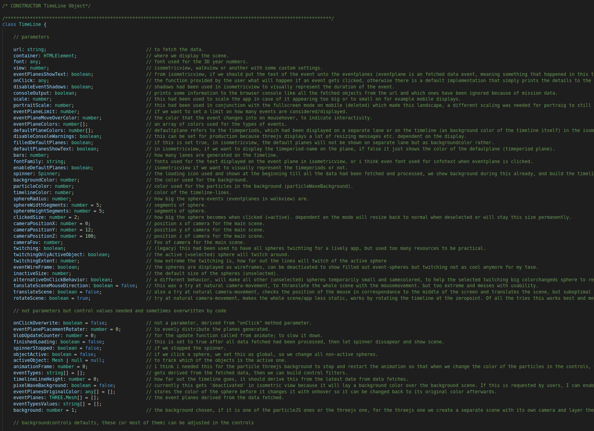
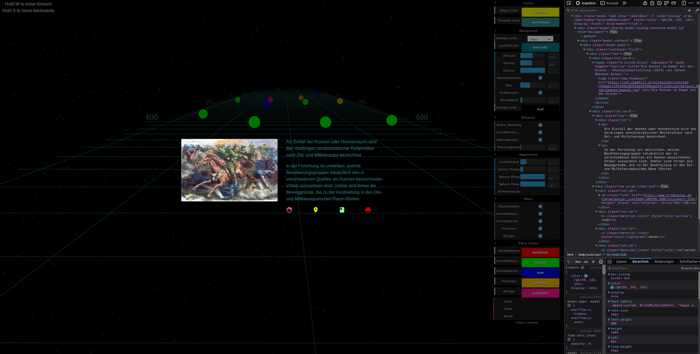

// Made with Typora, Philip Hofmann, 2020. Best viewed with Chrome/Chromium Webbrowser (image sizes)
Legal History Timeline Visualization
Initial
The objective of this project is to create a concept or prototype of a visually and interactively explorable timeline
I received the following concept drawing together with a word document that included subtitles, color-coding, text, links and graphics. The word documents included all the events to display
We parsed the document to a structured JSON and serve it on the backend API
Tools
The tools I used for this project were
- THREE.js, a high-level cross-browser JavaScript framework for creating and displaying 3D WebGL content on the web
- Webpack, a JavaScript module bundler (also HTML, CSS and images if loaders are included) into static assets
- Node.js , JavaScript runtime environment
- TypeScript, a superset of JavaScript, adds static typing to the language, transcompiles to JavaScript
Concept
After or while reading the documentation of the tools and experimenting with some examples, specifically with THREE.js, i sketched out some ideas or scene setups. The first view i call the "isometricView" based on the perspective i received from them. In my mind I was also playing around with another perspective I am more familiar with from 3D games, a first-person perspective, the user walking on the timeline, which was called the "walkView".

Development
isometricView
I started development on the isometricView. Following a snapshot of a specific state during development. This is after already some time had passed, i did not show intermediate steps here like try outs with different scenes, scenes on scenes overlay for the infoPlane (to display info on the selected event), shapes materials textures and lights for objects and scenes, multiple canvases, using canvas as THREEjs texture applied on planes to render text and the resulting low quality issues, using CSS3DRenderer to embed webpage into THREEjs 3D scene as alternative to the infoPlane scene overlay to improve text quality and write simple HTML afterwards, using buffered geometries for performance and so forth.
There are some things visible here, the design changed as shown just below. But here we placed different colored planes in the 3D space as to represent the timeline (timelinebars), the events were placed on top of the planes, labeled with their title (canvas-texturing) from start to enddate, one eventplane was put "standing" as for shadow-concept, conflict-evasion and for the later walkview, and there is a separate scene rendered above the main scene which was holding the infoPlane with canvastexture again as to hold the informational text of the clicked event (but resolution problems of texture therefore the text seemed low quality)
After finishing the isometric prototype, it looked now like this

A timeline created out of lines placed in space in relations to each other, placing dateYear as 3d text objects at corresponding coordinates in this 3D space, placing the events as created Planes at the correct position (parsing the years out of the eventtitle), color-coding them according to their type, displaying labels as canvas textures on those planes, color-coding timeperiods. There were already a lot of design-decisions made for this prototype. There had been a separate timelinebar with labels for the timeperiods (here removed and replaced through timeline-background-color coding), eventPlanes were first places on the same bar, meaning bars represented types, but since this was very space-inefficient and i needed to implement a collision-resolver that increased the y-position of eventPlanes that were to close to each other so they would not flicker (visual side-effect when scrolling) but lay on top of each other, I opted in for rotationally placing them on the timeline but showing types through color coding. In this prototype I also limited the camera-controls to panning only and extracted the earliest and latest dates of eventplanes being placed from the data and limited the camera to not be able to move above those thresholds for the user not to navigate too far from any events.
The eventplanes were interactive, when hovering over with the mouse i let them change the color to indicate interactivity. When clicking an event (setting this the active element, using raycasting to figure out which object in 3d space the user in his 2d plane representation on the monitor is actually trying to click on), a modal would pop up and display all the relevant information concerning this event.
Another design decision portrayed in this screenshot is that this version places the eventplanes all with the same size at the extracted startdate of the event, and when clicking on it would expand the "shadow" as thought of in the previous sketches to indicate visually how long this event was, also in relation to the start of other events. This was a design decision that in my opinion led to a cleaner overview, not cluttering the whole timeline with very long colored planes that were all conflicting with each other (induced flickering artifact therefore resolver needed, as mentioned before). By the way the resolver led to some events almost "hovering high in the air" if there were stacked events on a bar in a specific timeframe till they all pushed each other upwards in y-position to prevent flickering, having a visually stair-like appearance. Therefore with different iterations on this prototype I went with these decisions and removed the resolver.
walkView
I did not forget about my walkView idea. After finishing the isometricView Prototype, I change the camera perspective to be able to walk on the timeline. Since for the previous perspective, all planes were rotated and placed flat on the timeline, the walkView initially looked like this:
As apparent, this needed some work with either rotating the planes to stand up like roadsigns on the timeline, which did visually not work out so well, one would walk through the signs and they blocked vision or using some other 3d geometries. So I came up with another sketch of using 3d geometries like blobs instead of flat planes and placing them on the timeline
I replaced the PlaneGeometries with SphereGeometries since they seemed to fit the purpose best. The spheres were placed at the startDate of the events. Stripped down the timeline to not have a filled color anymore, the theme in general changed to a wire-frame approach. The spheres (also referred to as blobs) got bright vibrant colors. Background contrasting in dark (i am used to dark theme in code editors and the like this is why this also looks dark themed now). To achieve a dynamic background, I also included a pixel wave background as found in THREEjs examples, this example coming from Chris Aldridge. This whole visual appearance redesign stems also from feedback received to my work, being requests about the application to look more modern, more flashy. As they observed my work, they expressed admiration for the new walkView. I received later on as a reference the british museum with google which i definitely used as a reference and as inspiration, there are many things they did very well, for me especially the more randomized/chaotic appearing moving background, the blobs, color coding with filtering of topics and also the labels on the bars (geographically). I implemented an onClick behavior that the sphere clicked would be the active sphere and change in size as to indicate which one is currently viewed.

Like already stated, this version was liked. I wanted it to be even more dynamic, so I implemented a twitching motion to the spheres, meaning the spheres would twitch around by moving the connected edges. An alternative would have been to make more bubbles that would either jump up and down or morph/ change their forms. All the spheres twitching in default state together with the pixel ocean waves was too demanding for processing, it noticeably slowed the app down. So I reduced it to an onclick-twitching-behavior, meaning only the current active sphere would show such a behavior while the other spheres were static.
Customization & more dynamic experience
As i liked the filtering example, and seeing that simple color adjusting to the likings of the user made such a great impact (event thought changing colors is programmatically super simple), I wanted the user to be able to customize the app. I found dat.gui as a controller library for JavaScript, and started integrating it. The goal being that the user can change colorscheming on the fly and see the results, also filtering for types. In one state it looked like this
Something I should mention is that the app was build in a way that the colors could be given as build parameters when creating the timeline object. But every time there was a parameter-change request the whole app needed to be rebuilt. This is why I started integrating this feature so it could be done on the built live version running on our server. Customization became a big focus of mine so I wanted the user to have a lot of control over this prototype, to get an idea of what is possible. I added more and more controls, for the user to be able to controls the spheres themselves, meaning to transform also the geometry on the fly, for example changing into triangles as shown in the next screenshot. The user could also now choose the onClick behavior, where I implemented for example the alternativeOnClickBehavior, where all non-active spheres would get small and colorless so the active element really stands out. I also implemented a saving function that would store the parameter values chosen in dat.gui in a local cookie and on page refresh build the app with the corresponding values retrieved from the browsers local storage as parameters. There is also a show parameters button that would give you the values in textual form so one could copy and paste them into an email for someone else to try out these exact settings, and a restore button that would simply clear out the cookie. While implementing more and more controls, the app got more and more walkView specific. While through a parameter the app could still be built in the isometricView, it received no love nor attention from my side since the walkView was my favorite and also the walkView was generally good received and focused upon, so it basically replaced the original isometricView. Since the isometricView broke and would have needed constant maintaining and testing when working on the isometricView, it was a design decision to remove it entirely from the codebase to clean up the code and focus on one specific view.
I also incorporated the javascript library particles.js for more options concerning the dynamic background, being less predictable but more chaotic. I implemented different settings like the lines background and the stars background, and finally incorporated it into the dat.gui controls for the user to also choose the background and color.
As also seen in this screenshot there is a intermediate layed when clicking on a sphere/event, meaning the bootstrap modal would not intermediately pop up, but there is a summary of this event displayed at the very top, for the user to still be able to use the app beneath through panning. Clicking on "More" would open the bootstrap modal.
Since there had been a request for a less static camera, or more "natural movement" camera that would give one the impression of a less static app, I again, took up my pen

Then i started to try some different approaches and opted in for a rotations when moving the mouse to the side screens though registered Eventlisteners checking the mouse pointers position relative to the middle of the display/screen of the user. Also extension of the controllers of dat.gui where you could choose the moving speed of the background particles moving and so forth
Relations
NoType was implemented to also display the spheres where the category was missing, since not all the data was complete we needed to ignore some events, especially those that had no date provided since where would you place events on a timeline if there is no associated date to it? To still display the notypes became important when working on associations between the events themselves, since they were linked to each other, showing a relationship. To visually represent this relationship I drew the following
I implemented it by leveraging the CatmullRomCurve3.
Something I forgot to mention is that after the active sphere had been twitching, it would remain the form of the last twitching, making it possible for the user to differentiate visually which spheres had already been visited/clicked on, as the non-clicked were still in their default smooth round shape
Code
The code itself reach above 3000 lines of code in one single typescript file since I started working with an template file that contained the HTML, a example typescript file that build the timeline object and started it, the whole application logic was contained in the timeline.ts file. The way i had been keeping an overview till this point was through comment separation (and drawing a function hierarchy)

and in general I tried to comment my code so that not only myself but also if another student would have started on this code could follow the logic in the code. Here simply shown the constructor parameters

But then I separates the code into ES6 Modules, also changed almost all functions into arrow functions and using object property shorthand. So there was a folder structure now with modules that should help in code navigation
This condensed for example the initialize function and gave a better overview:

Playground
I also set up and ran a local sonarqube instance to test my code
which simply showed 40 code smells, almost all of them were in the manner of "Remove this unnecessary not-null assertion". Afterwards I incorporated the javascript testing framework mocha with jsdom and tries to set up some tests and get it running, but after resolving/using workarounds for 'jsdom() is not a function' ' localStorage SecurityError', I switched to jest, which then seemed way simpler to integrate and configure and use. I started implementing tests, but realized that since i was adding tests post-coding (instead of Test Driven Development TDD) i was simply testing the current implementation and therefore removed the testing frameworks. I guess the only useful thing would have been to test if the data received from the api was processed correctly, meaning still being integer and complete after processing had been done.
I also did an audit with Lighthouse
But optimizing for performance is not a focus in this project, I am creating a prototype of what is a visually appealing possible solution.
Out of curiosity, I included the JavaScript Obfuscator Tool (mangled identifier names generator, self defending, rotating string array, disabling console output and debug protection), but performance got almost halfed, there is no beneficial tradeoff here.
I also wanted to try googles Closure Compiler, but my code was not compatible (after resolving the arguments.callee() problem in the particles.js library) since I was using a lot of ES6 specific features (This code cannot be converted from ES6) so i continued using Terser
I had also learned during development that for mobile we needed to implement gestures with a threshold to determine if the user actually issued a tap (click) or a swipe (panning). Also during developlment i needed to adjust the mouse hovering listeners, I needed to catch the case when the mouse was moving from adjustant planes without space inbetween because I was chancing the onHover color of the event. The dat.gui type filters are built dynamically from the data received from the api (types array).
3D Labels
I also enabled 3D labels on the events as requested
I went with a small label, because there are sections in this visualization where events are very densely packed, and together with long titles this can lead to a noticeable visual deterioration, especially when a bigger font size would be used (overlapping and decrease in readability)
Modal redesign
When clicking on an eventPlane, a bootstrap modal pops up with the corresponding information about the event:
Visually it does not seem to fit in into the current Theme. Some different styling like bright text on black background, or a redesign, would be fitting.
I took up a pencil and sketched the following ideas:
Then I tried setting up a different layout, moving the reference of the picture into a tooltip and presenting the links as icons instead of text. The new layout might look something like this:
In the current modal redesign version I thought of using the user-defined timeline color as text color since this is also used in the infoPanel, and if the user changes the background color the user can contrast the textcolor to it. The links get bright colors to pep it up and fit to the theme/style of the app. If a link is missing in the dataset the icon will be shown as default text color to indicate non-interactivity (another approach would be to remove it, meaning to only display working links, but i like the indication because it gives consistency to the appearance, every modal should look the same this way) (hardcoded visual example following):

No coloring for missing links:
For the modal redesign we need to change the structure of the JSON received from the backend. Currently all the modal-relevant information is included in a single string containing html styling tags instead of raw data:
The backend's job is processing/transforming/serving data to the frontend. The backend should not be concerned with styling. The frontend is concerned with visuals and styling. Therefore I needed to adjust the backend php code using regex to serve more distinct and unstyled data to the frontend (example section, code contains way more lines) :
The current state/JSON received now contains some additional labels/properties without styling, which allows for a simpler integration in the frontend modal without needing to clean up the data first
Of course I needed to cover the cases in the frontend where there was missing data to display the modal, meaning if there was no text provided to diplay a default message to 'click on one of the following links to receive more information' instead of just only icons floating in space, also if there were no links to display to the user that 'there are currently no more information on this event available'.
When changing the file on the server/setting this live I encountered the case that the JSON it served was different then the JSON I receive when running it on my local apache server, even tought it is the exact same code. It worked fine for the first event, but failed to extract the mentioned information for all following, meaning the live version would not have content in the 'text' and 'image' ... , properties of all following events except the first.
So I rewrote the regex section again into SimpleXML with xpath. The code was way smaller, 70 lines of code now into less than 20 :
The modals are now generated using this processed data. Looks fine enough provided the content is not too long:

The current implementation now includes all the extracted links as icons. Those links could not all be categorized into the same, there were a few like "LHO" and "Quellentext" that appeared throughout the dataset, so these will always receive the same icon & color, but all other links will be checked for external reference (there were links like "39573-pdf.pdf" or "../../../default_5/de/html/unit_chapter_58.html" which now are not included into the modal) and then receive an icon and color from the provided range in the code. The grayed out icons and consitent icon theme-design is removed, since for this to work there would need to be consistent link-to-icon binding like it is with LHO and Quellentext since they appear consistently in the dataset. Some Modals also have only 1 icon, will others have 8, therefore having just a huge bulk of greyed out icons the whole time seems non-beneficial. The title of the link is indicated on mouse-hover-over:


I changed the approach since it seemed confusing to assign random icons. Icons should be fixed, meaning the same icon always corresponds to the same link-destination (like LHO or LHS) since every user builds a mental model of the app and assiciates icon-gemoetries with link-destinations. I wrote a little script that gathered together how often each link-destination appears in the dataset

I went with specific links like HLO, Quellentext, HRG and LHS that received their own designated icon, all other links are ignored for now. This led to the observation that some data-elements had the same link twice or different sources, which led to a dublification of one icon


So I added code to detect if the exact same linkdestination had already been used and to change color if it has the same nametag but includes a different destination


And then I included the ramining links, but this time as a dropdown with items with a dropdown-buttion

I did not like the bright white background of the dropdown so I changed it more to the style of the app by making the background transparent

A problem that then arose was that with enough content, the dropdown would change into a dropup making it difficult to read the text

This behavior came from Popper.js, which Bootstrap internally uses for placement of for example in this case dropdowns. The container is already full, popper.js does not place elements outside of its parent container, so it became a dropup. I then overwrote the default Popper.js behavior to allow placement outside of its parent container, but the results were visually undesirable, generating a scrollbar at the side of the modal where scrolling is needed to see the links while the top part of the modal content/text dissappears. I then opted into a simple half-transparent black background for the dropdown-items to improve readability

According to a stakeholder request, I changed the icons into text to clarify where the links lead to. At the same time i darkened the beackground of the textual column as to improve contrast and therefore readability of the text especially in the case of bright colors in the background. In the backend I also adapted some php code so the "Literaturangabe ..." part does not show up in the modal text anymore: